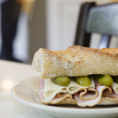
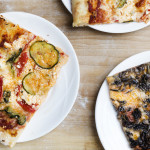
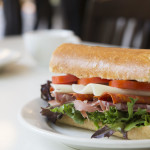
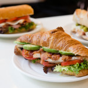
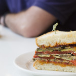

|  |  |  |  |  |
Klasszikus |
Szezonális specialitás |
BLTVállalkozásunk ropogós szalonnával, vegyes zöldekkel és paradicsommal, mozzarellával (West Seattle) vagy brie-vel (Burien és Capitol Hill) készítve, majonézes ruhával. |
Olasz tekercsA szakács által választott pácolt húsok, például prosciutto, szalámi (Genoa, Soppresata vagy Capocollo) vagy pepperoni, provolonnal, paradicsom szeletekkel, pepperoncinivel és vinegrettel öltözött rukkolával, olasz stílusú tekercsben majonézzel. |
California ClubA vajas croissant-ra épített szendvics tartalmaz szalonnát, sült csirkét, salátát, paradicsomot, avokádót és füstölt mozzarellát, dijoni és majonézes keverékkel megtisztítva. |
LecsóPörkölt portabella gombák, cukkini, padlizsán, valamint piros és sárga paprika rétegei, pirított fokhagymán sült pirospaprika szószsal. |
CapreseA töltelékben házi készítésű csokoládéval töltött hagyományos pekándió pite, meleg, gazdag kakaó ízekkel. 3 hüvelykes egyedi vagy 8 hüvelykes egész pitékben kapható |
QuicheKrémes állagú és a megfelelő szerecsendió-illatú, puha kéregre épülő quiche hamar helyi kedvenc lett. Egészben vagy szeletenként elérhető napi rotációnk a következőket tartalmazza: |
Sonkás sajtos baguetteA Bakery Nouveau kedvence, amely sonkát, svájci Emmenthaler sajtot és cornichont kombinál, dijoni és majonéz keverékkel, vajas bagetten. |
LorraineA szalonna klasszikus párosítása svájci Emmentaler sajttal és édes karamellizált hagymával. |
Törökország és HavartiKrémes Havarti sajttal és borssal sült pulyka pelyhes kiflien, kő őrölt mustár és majonéz keverékével öltözve. |
SpenótFriss, puha spenót ricottával, parmezánnal és fenyőmaggal. |